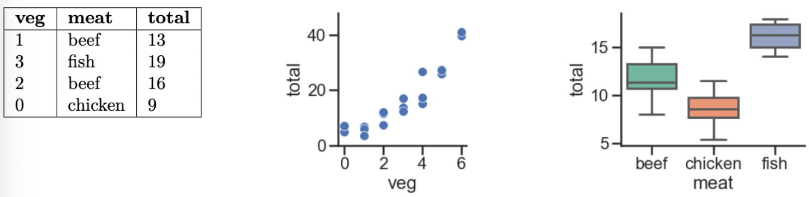

Each lab worksheet will contain several activities, some of which will involve writing code and others that will involve writing math on paper. To receive credit for a lab, you must complete as many of the activities as you can in 2 hours and submit a PDF of your work to Gradescope. We will provide specific instructions on how to submit programming activities (e.g. submitting the notebook or including a screenshot of some output).
Suppose we have \(n\) data points, \((\vec x_1, y_1), (\vec x_2, y_2), \dots (\vec x_n, y_n)\), where each \(\vec x_i\) is a feature vector of \(d\) features:
Our goal is to find the optimal parameter vector, \(\vec w^{\ast}\), which minimizes the mean squared error of our model’s predictions on the training data.
The optimal \(\vec w^{\ast}\) satisfies the normal equation, \(X^TX \vec w = X^T \vec y\). To make predictions:
\(\vec p = X\vec w^{\ast}\) is a vector containing the prediction for all \(n\) observations.
\(h(\vec x_i)=\vec w^{\ast} \cdot \text{Aug}(\vec x_i)\) is the prediction for any one observation \(\vec x_i\).
Activity 1: Multiple Linear Regression
Let \(X\) be a full rank\(n \times 3\) design matrix and \(\vec y \in \mathbb{R}^n\) be an observation vector. Suppose we have already fit a multiple linear regression model of the form
$$ h(\vec x_i)=w_0+w_1x_i^{(1)}+w_2 x_i^{(2)} $$
Now, suppose we add the feature \((x_i^{(1)}+x_i^{(2)})\) to our design matrix and train a new model.
a)
Which of the following are true about the new \(n \times 4\) design matrix \(X_\text{new}\) with our added feature? Select all that apply.
The columns of \(X_\text{new}\) are linearly independent
The columns of \(X_\text{new}\) are linearly dependent
\(\vec y\) is orthogonal to all the columns of \(X_\text{new}\)
\(\vec y\) is orthogonal to all the columns of the original design matrix \(X\)
\(\text{colsp}(X)=\text{colsp}(X_\text{new})\)
\(X_\text{new}^TX_\text{new}\) is invertible
\(X_\text{new}^TX_\text{new}\) is not invertible
Solution
\(X_\text{new}^TX_\text{new}\) is not invertible
Let’s look at the correct options:
The columns of \(X_\text{new}\) are linearly dependent because the new added column, consisting of values of the form \(x_i^{(1)}+x_i^{(2)}\), is a linear combination of columns 1 and 2 of \(X\). By definition, this means the columns of \(X_\text{new}\) are linearly dependent.
The new added column does not change the set of possible linear combinations of the columns of \(X\), since this added column was already in \(\text{colsp}(X)\). Therefore, \(\text{colsp}(X)=\text{colsp}(X_\text{new})\).
\(X_\text{new}^TX_\text{new}\) is not a full rank matrix because \(X_\text{new}\)’s columns aren’t linearly independent, meaning \(\text{rank}(X_\text{new}) < 4\), and \(\text{rank}(X_\text{new}^TX_\text{new}) = \text{rank}(X_\text{new})\), so \(\text{rank}(X_\text{new}^TX_\text{new}) < 4\), meaning \(X_\text{new}^TX_\text{new}\) is not invertible.
Note that \(\vec y\) has no orthogonality relationship to the columns of \(X\) or \(X_\text{new}\). Instead, it’s the case that the error vector, \(\vec e = \vec y - X \vec w^{\ast}\), is orthogonal to the columns of both \(X\) and \(X_\text{new}\).
b)
Find a basis for \(\text{nullsp}(X_\text{new})\). (This should be quick!)
By construction, the fourth column of \(X_\text{new}\) is the sum of \(\vec x^{(1)}\) and \(\vec x^{(2)}\). So, multiplying \(X_\text{new}\) by \(\begin{bmatrix} 0 \\ 1 \\ 1 \\ -1 \end{bmatrix}\) — or any scalar multiple of it — will give the zero vector!
Since \(\text{rank}(X) = 3\) (because we were told the original design matrix \(X\) was full rank), \(\text{rank}(X_\text{new}) = 3\) also, meaning \(\text{nullsp}(X_\text{new})\) is 1-dimensional (from the rank-nullity theorem). So, this vector we’ve found is a basis for \(\text{nullsp}(X_\text{new})\).
Every week, Lauren goes to her local grocery store and buys exactly one pound of meat (either beef, fish, or chicken) but varying amounts of vegetables. We’ve collected a dataset containing the pounds of vegetables bought, the type of meat bought, and the total bill. Below we display the first few rows of the dataset and two plots generated using the entire (training) dataset.

In each part below, we provide you with a model that predicts total (her total grocery bill), fit to the dataset by minimizing mean squared error. For each model, determine whether each optimal parameter \(w^{\ast}\) is positive, negative or exactly 0. For example, in part (iv), you’ll need to provide 3 answers: one for \(w_0^{\ast}\), one for \(w_1^{\ast}\), and one for \(w_2^{\ast}\).
\(h(\vec x_i)=w_0\)
\(h(\vec x_i)=w_0+w_1 \cdot \text{veg}_i\)
\(h(\vec x_i)=w_0+w_1 \cdot \text{meat=chicken}_i\) (one hot encoded feature for chicken)
This is the constant model. Since we’re minimizing mean squared error, \(w_0^{\ast}\) is the mean of all total bills in the dataset, which we can tell from the scatter plot is positive.
\(w_0^{\ast}=\boxed{\text{positive}}\)
\(h(\vec x_i)=w_0+w_1 \cdot \text{veg}_i\)
\(w_0\) is the intercept and \(w_1\) corresponds to pounds of vegetables. As vegetable purchases increase, the total bill increases, so \(w_1>0\). The intercept looks positive as well, though this is a little less clear, admittedly.
Let’s think in terms of two cases: Lauren buys chicken, and Lauren doesn’t buy chicken.
Lauren buys chicken: \(h(\vec x_i)=w_0+w_1\)
Lauren doesn’t buy chicken: \(h(\vec x_i)=w_0\)
Since we’re picking \(w_0^{\ast}\) and \(w_1^{\ast}\) so that they minimize mean squared error, \(w_0^{\ast} + w_1^{\ast}\) should be the average total bill for purchases involving chicken, and \(w_0^{\ast}\) should be the average total bill for purchases not involving chicken. Meaning,
Both averages are positive, so \(w_0^{\ast}\) is positive. But, purchases involving chicken tend to be cheaper than purchases not involving chicken (as is evident in the third box plot), so \(w_1^{\ast}\) is negative.
Following similar logic to the previous part, \(w_0\) is the mean total for the reference group (fish), \(w_1\) is the difference between the mean of beef and the mean of fish, \(w_2\) is the difference between the mean of chicken and the mean of fish.
\(w_0^{\ast}=\boxed{\text{positive}}\)
\(w_1^{\ast}=\boxed{\text{negative}}\) (beef purchases tend to be less expensive than fish purchases)
\(w_2^{\ast}=\boxed{\text{negative}}\) (chicken purchases tend to be less expensive than fish purchases)
This model has a parameter for each meat and an intercept, but since the sum of one hot encoded features for meat is always one, the design matrix is not full rank. Therefore, the optimal solution is not unique, and there are infinitely many optimal parameter vectors \(\vec w^{\ast}\) that minimize mean squared error.
For example, \(\vec w^{\ast} = \begin{bmatrix} 1 \\ 2 \\ 3 \\ 4 \end{bmatrix}\) and \(\vec w^{\ast} = \begin{bmatrix} 2 \\ 1 \\ 2 \\ 3 \end{bmatrix}\) both yield the same predictions. (Don’t believe me? Write out all three cases for both \(\vec w^{\ast}\) vectors and see for yourself.)
Activity 3: Gradients and Partial Derivatives
Suppose \(\vec x \in \mathbb{R}^3\). Let \(g(\vec x)=(x_1^2+x_2-3)^2+(x_1+x_2^2-4)^2 + x_3^2\).
a)
Find \(\nabla g(\vec x)\). Hint: Start by finding the partial derivatives of \(g\) with respect to \(x_1\), \(x_2\), and \(x_3\).
Solution
Let’s start by finding the partial derivatives of \(g\) with respect to \(x_1\), \(x_2\), and \(x_3\). We’ll need to make heavy use of the (regular, scalar-to-scalar) chain rule.
Notice the shared terms of \(x_1^2 + x_2 - 3\) and \(x_1 + x_2^2 - 4\) in the first and second components. To make the computation of the gradient at \(\begin{bmatrix} 2 \\ 1 \\ 0 \end{bmatrix}\) easier, let’s compute these values first.
The vector \(\begin{bmatrix} 14 \\ 0 \\ 0 \end{bmatrix}\) describes the direction of steepest ascent at the point \(\begin{bmatrix} 2 \\ 1 \\ 0 \end{bmatrix}\).
c)
Why is it guaranteed that \(g(\vec x)\)has a global minimum?
Solution
\(g(\vec x) = (x_1^2 + x_2 - 3)^2 + (x_1 + x_2^2 - 4)^2 + x_3^2\) is a sum of three squares, each of which is \(\geq 0\). So, knowing nothing else about what is being squared, we know that \(g(\vec x) \geq 0\) for all \(\vec x\), and so \(g(\vec x)\) has a global minimum of something, whether it’s 0 or some positive number.
Activity 4: The Big Three
In Chapter 8.2, we introduced three key gradient rules for vector-to-scalar functions.
Dot product: If \(f(\vec x) = \vec a \cdot \vec x\), then \(\nabla f(\vec x) = \vec a\).
Squared norm: If \(f(\vec x) = \lVert \vec x \rVert^2\), then \(\nabla f(\vec x) = 2 \vec x\).
Quadratic form: If \(f(\vec x) = \vec x^T A \vec x\), then \(\nabla f(\vec x) = (A + A^T) \vec x\).
In each part below, assume \(\vec x, \vec a, \vec b \in \mathbb{R}^n\), \(A \in \mathbb{R}^{n \times n}\), and \(c \in \mathbb{R}\).
a)
Given \(f(\vec x) = \vec x^T A \vec x + \vec b^T \vec x + c\), find \(\nabla f(\vec x)\).
Solution
The key idea is that the gradient of a sum is a sum of the gradients of the terms, just like with standard derivatives.
$$ \nabla f(\vec x) = \nabla (\vec x^T A \vec x + \vec b^T \vec x + c) = \nabla (\vec x^T A \vec x) + \nabla (\vec b^T \vec x) + \nabla (c) = (A + A^T) \vec x + \vec b $$
Therefore,
$$ \boxed{\nabla f(\vec x) = (A + A^T) \vec x + \vec b} $$
b)
Given \(f(\vec x) = \sum_{i=1}^n x_i\), find \(\nabla f(\vec x)\).
Solution
Remember that the sum of a vector’s components is the same as the dot product of that vector with the vector of all 1’s:
Given \(f(\vec x) = \lVert A \vec x \rVert^2\), find \(\nabla f(\vec x)\). Hint: Use the fact that \(\lVert \vec v \rVert^2 = \vec v^T \vec v\).
Solution
Let’s start by expanding \(\lVert A \vec x \rVert^2\):
$$ \begin{align*} f(\vec x) &= \lVert A \vec x \rVert^2 \\\\ &= (A \vec x)^T (A \vec x) \\\\ &= \vec x^T A^T A \vec x \\\\ &= \vec x^T (A^TA) \vec x \end{align*} $$
\(f(\vec x)\) is a quadratic form, with the matrix \(A^TA\). So,
\(f(\vec x)\) is a quadratic form too, with the matrix \(\vec a \vec a^T\). This is a symmetric matrix (\(\vec a \vec a^T = (\vec a \vec a^T)^T\)). So,
$$ \boxed{\nabla f(\vec x) = 2(\vec a \vec a^T) \vec x = 2 \vec a (\vec a^T \vec x) = 2 (\vec a \cdot \vec x) \vec a} $$
Activity 5: Quadratic Forms and Symmetry
Suppose \(f(\vec x) = \vec x^T \begin{bmatrix} a & b \\ c & d \end{bmatrix} \vec x\), where \(\vec x = \begin{bmatrix} x_1 \\ x_2 \end{bmatrix}\). (If you’d like, as an example, let \(A = \begin{bmatrix} 2 & 3 \\ 7 & -8 \end{bmatrix}\).)
Expand \(f(\vec x)\) so that it doesn’t involve matrices or vectors.
Find \(\frac{\partial f}{\partial x_1}\), \(\frac{\partial f}{\partial x_2}\), and show that \(\nabla f(\vec x) = \begin{bmatrix} \frac{\partial f}{\partial x_1} \\ \frac{\partial f}{\partial x_2} \end{bmatrix}\) satisfies the quadratic form gradient rule.
Discuss: Why do we typically assume that \(A\) is symmetric when defining a quadratic form?